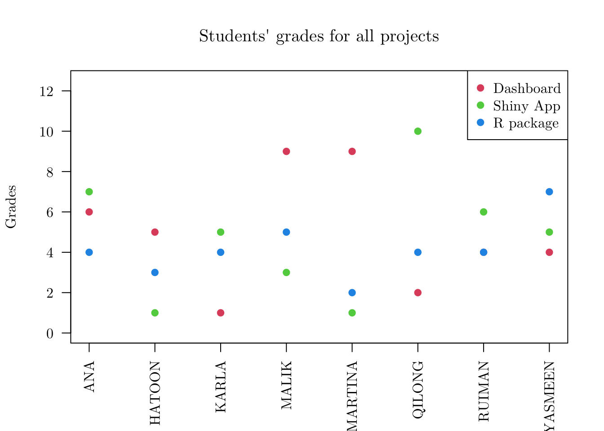
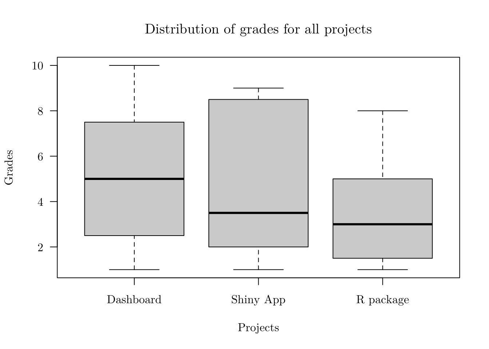

In this tutorial, we will introduce the Object Oriented Programming (OOP) paradigm in R. Although, R can be seen more as a Functional Language, different OOP systems can be used. In particular, we will cover S3 and R6 (as we will define below). The main reference here is the Advanced R book.
Different from other programming languages, there are (at least) 4 different OOP systems available in R, namely, S3, S4, RC (which stands for Reference Class), and R6 (from the R6 package). Also, although OOP is important in R, R can be seen as an Functional Language, that is, a language made of first-class functions (functions that behave like any other data structure) that are used to solve problems.
In this regard, we also have to make the distinction between encapsulated OOP and functional OOP. The former works like in most of the other languages (e.g., Python, Java, etc.), in which the methods belong to objects or classes, and method calls typically look like object.method(arg), and the latter works through generic functions, and method calls look like ordinary function calls, as in generic(arg).
In R,
S3 is an informal implementation of functional OOP and relies on common conventions. Functions have different behaviors depending on the arguments’ class.S4 is a formal and rigorous rewrite of S3. It is also an implementation of functional OOP.RC implements encapsulated OOP.R6 implements encapsulated OOP, like RC, but resolves some issues.In Object Oriented Programming (OOP) paradigm (more specifically, in encapsulated OOP), we have (among other concepts) classes, objects, methods, and attributes. Roughly speaking, a class is a definition of an object, an object is an instance of a class created with specifically defined data, a method is a function that describes the behavior of an object, and an attribute is a variable associated with an object that represents its state.
However, In base R, things are a bit different. Although one may see online that “everything that exists in R is an object”, we have to distinct base objects from OO objects. OO objects have a class attribute. For instance,
ch <- character()
is.object(x = ch)## [1] FALSEdf <- as.data.frame(matrix(data = rnorm(n = 4), nrow = 2, ncol = 2))
is.object(x = df)## [1] TRUEattr(ch, 'class')## NULLattr(df, 'class')## [1] "data.frame"Every object has a base type, though. You can access it with the typeof() function.
typeof(ch)## [1] "character"typeof(df)## [1] "list"S3S3 is the simplest OOP implemented system. As it is a functional OOP implementation, it will not follow the commonly used notation for creating objects and calling methods (e.g., object.method(arg)); instead we will mostly use them along with polymorphic functions (i.e., functions that behave differently depending on their input).
Let’s start with the following example
fact <- factor(x = c(1, 2, 1, 1, 2), levels = c(1, 2), labels = c('first', 'second'))
fact## [1] first second first first second
## Levels: first secondis.object(x = fact)## [1] TRUEattr(fact, 'class')## [1] "factor"typeof(x = fact)## [1] "integer"attributes(fact)## $levels
## [1] "first" "second"
##
## $class
## [1] "factor"Notice that fact is an OO object with class factor. In this regard, we can get the underlying base type of fact by using the unclass() function.
unclass(fact)## [1] 1 2 1 1 2
## attr(,"levels")
## [1] "first" "second"A (not so) easy way to test if an object is a S3 object is doing the following (i.e., testing if it is a OO object and if it is not a S4 object)
is.object(fact) & (!isS4(fact))## [1] TRUEHowever, the main advantage of using such a system is related to the generic functions. In that case, depending on the input class, the functions behaves differently. For instance, let’s see how the summary() function works with fact and with the data frame df.
summary(fact)## first second
## 3 2summary(df)## V1 V2
## Min. :-1.0285 Min. :-0.05797
## 1st Qu.:-0.8823 1st Qu.:-0.05535
## Median :-0.7361 Median :-0.05273
## Mean :-0.7361 Mean :-0.05273
## 3rd Qu.:-0.5898 3rd Qu.:-0.05011
## Max. :-0.4436 Max. :-0.04750For the fact object, summary() returns the count of observations in each class, and for the df object, it returns a few statistics that can be computed for each numeric vector (represented by df’s columns).
If we want to check if a particular function is a generic function, we can use the ftype() function from the sloop package.
library(sloop)
sloop::ftype(f = summary)## [1] "S3" "generic"Also, if we want to see how summary(fact) is different from summary(nv), we can call summary.factor and summary.data.frame.
summary.factor## function (object, maxsum = 100L, ...)
## {
## nas <- is.na(object)
## ll <- levels(object)
## if (ana <- any(nas))
## maxsum <- maxsum - 1L
## tbl <- table(object)
## tt <- c(tbl)
## names(tt) <- dimnames(tbl)[[1L]]
## if (length(ll) > maxsum) {
## drop <- maxsum:length(ll)
## o <- sort.list(tt, decreasing = TRUE)
## tt <- c(tt[o[-drop]], `(Other)` = sum(tt[o[drop]]))
## }
## if (ana)
## c(tt, `NA's` = sum(nas))
## else tt
## }
## <bytecode: 0x7fcd60e0ca28>
## <environment: namespace:base>summary.data.frame## function (object, maxsum = 7L, digits = max(3L, getOption("digits") -
## 3L), ...)
## {
## ncw <- function(x) {
## z <- nchar(x, type = "w")
## if (any(na <- is.na(z))) {
## z[na] <- nchar(encodeString(z[na]), "b")
## }
## z
## }
## z <- lapply(X = as.list(object), FUN = summary, maxsum = maxsum,
## digits = 12L, ...)
## nv <- length(object)
## nm <- names(object)
## lw <- numeric(nv)
## nr <- if (nv)
## max(vapply(z, function(x) NROW(x) + !is.null(attr(x,
## "NAs")), integer(1)))
## else 0
## for (i in seq_len(nv)) {
## sms <- z[[i]]
## if (is.matrix(sms)) {
## cn <- paste(nm[i], gsub("^ +", "", colnames(sms),
## useBytes = TRUE), sep = ".")
## tmp <- format(sms)
## if (nrow(sms) < nr)
## tmp <- rbind(tmp, matrix("", nr - nrow(sms),
## ncol(sms)))
## sms <- apply(tmp, 1L, function(x) paste(x, collapse = " "))
## wid <- sapply(tmp[1L, ], nchar, type = "w")
## blanks <- paste(character(max(wid)), collapse = " ")
## wcn <- ncw(cn)
## pad0 <- floor((wid - wcn)/2)
## pad1 <- wid - wcn - pad0
## cn <- paste0(substring(blanks, 1L, pad0), cn, substring(blanks,
## 1L, pad1))
## nm[i] <- paste(cn, collapse = " ")
## }
## else {
## sms <- format(sms, digits = digits)
## lbs <- format(names(sms))
## sms <- paste0(lbs, ":", sms, " ")
## lw[i] <- ncw(lbs[1L])
## length(sms) <- nr
## }
## z[[i]] <- sms
## }
## if (nv) {
## z <- unlist(z, use.names = TRUE)
## dim(z) <- c(nr, nv)
## if (anyNA(lw))
## warning("probably wrong encoding in names(.) of column ",
## paste(which(is.na(lw)), collapse = ", "))
## blanks <- paste(character(max(lw, na.rm = TRUE) + 2L),
## collapse = " ")
## pad <- floor(lw - ncw(nm)/2)
## nm <- paste0(substring(blanks, 1, pad), nm)
## dimnames(z) <- list(rep.int("", nr), nm)
## }
## else {
## z <- character()
## dim(z) <- c(nr, nv)
## }
## attr(z, "class") <- c("table")
## z
## }
## <bytecode: 0x7fcd60e68e18>
## <environment: namespace:base>Now, let’s create a new class and make an object that is an instance of such a class. This can be done using the structure() function, or in a two-step procedure
# One step
obj <- structure('André', class = 'person')
# Two steps
obj <- 'André'
class(obj) <- 'person'
attr(obj, 'class')## [1] "person"is.object(obj)## [1] TRUEHowever, because there is no validation on the how a class can be assigned to an object, when creating a new class, it is better to provide at least three functions: a constructor, a validator, and a helper.
# Constructor
new_person <- function (x = character()) {
if (!is.character(x)) { stop('"x" should be a "character".') }
structure(x, class = 'person')
}
obj <- new_person(1)## Error in new_person(1): "x" should be a "character".obj <- new_person('André')
attr(obj, 'class')## [1] "person"# Validator
validate_person <- function (x) {
values <- unclass(x)
if (length(values) == 0) { stop('Object of this class must be have length >= 1.') }
x
}
obj <- validate_person(new_person(character()))## Error in validate_person(new_person(character())): Object of this class must be have length >= 1.obj <- validate_person(new_person('André'))
print.default(obj)## [1] "André"
## attr(,"class")
## [1] "person"# Helper (coerce the input to a valid value)
person <- function (x) { # same name as the class
if (length(x) == 0) { x <- 'André' }
validate_person(new_person(x))
}
obj <- person(character())
print.default(obj)## [1] "André"
## attr(,"class")
## [1] "person"Since we have a new class, we can also code new behaviors for any generic function we want. For instance, we can customize the print() function for an object of class person. To do so, we can use the notation generic_function.class_name() when creating the functions; in particular
print.person <- function (x, ...) {
x <- unclass(x)
m <- paste('Hi, my name is ', x, '.', sep = '')
print(m)
invisible(m)
}
print(obj)## [1] "Hi, my name is André."To obtain a list of the possible choices for arg in print(arg), one can use the sloop::s3_methods_generic() function.
sloop::s3_methods_generic('print')$class## [1] "acf"
## [2] "AES"
## [3] "anova"
## [4] "aov"
## [5] "aovlist"
## [6] "ar"
## [7] "Arima"
## [8] "arima0"
## [9] "AsIs"
## [10] "aspell"
## [11] "aspell_inspect_context"
## [12] "bibentry"
## [13] "Bibtex"
## [14] "browseVignettes"
## [15] "bslib_fragment"
## [16] "bslib_page"
## [17] "by"
## [18] "changedFiles"
## [19] "check_bogus_return"
## [20] "check_code_usage_in_package"
## [21] "check_compiled_code"
## [22] "check_demo_index"
## [23] "check_depdef"
## [24] "check_details"
## [25] "check_details_changes"
## [26] "check_doi_db"
## [27] "check_dotInternal"
## [28] "check_make_vars"
## [29] "check_nonAPI_calls"
## [30] "check_package_code_assign_to_globalenv"
## [31] "check_package_code_attach"
## [32] "check_package_code_data_into_globalenv"
## [33] "check_package_code_startup_functions"
## [34] "check_package_code_syntax"
## [35] "check_package_code_unload_functions"
## [36] "check_package_compact_datasets"
## [37] "check_package_CRAN_incoming"
## [38] "check_package_datalist"
## [39] "check_package_datasets"
## [40] "check_package_depends"
## [41] "check_package_description"
## [42] "check_package_description_encoding"
## [43] "check_package_license"
## [44] "check_packages_in_dir"
## [45] "check_packages_used"
## [46] "check_po_files"
## [47] "check_pragmas"
## [48] "check_Rd_line_widths"
## [49] "check_Rd_metadata"
## [50] "check_Rd_xrefs"
## [51] "check_RegSym_calls"
## [52] "check_S3_methods_needing_delayed_registration"
## [53] "check_so_symbols"
## [54] "check_T_and_F"
## [55] "check_url_db"
## [56] "check_vignette_index"
## [57] "checkDocFiles"
## [58] "checkDocStyle"
## [59] "checkFF"
## [60] "checkRd"
## [61] "checkRdContents"
## [62] "checkReplaceFuns"
## [63] "checkS3methods"
## [64] "checkTnF"
## [65] "checkVignettes"
## [66] "citation"
## [67] "cli_ansi_html_style"
## [68] "cli_ansi_string"
## [69] "cli_ansi_style"
## [70] "cli_boxx"
## [71] "cli_diff_chr"
## [72] "cli_doc"
## [73] "cli_progress_demo"
## [74] "cli_rule"
## [75] "cli_sitrep"
## [76] "cli_spark"
## [77] "cli_spinner"
## [78] "cli_tree"
## [79] "codoc"
## [80] "codocClasses"
## [81] "codocData"
## [82] "colorConverter"
## [83] "compactPDF"
## [84] "condition"
## [85] "connection"
## [86] "CRAN_package_reverse_dependencies_and_views"
## [87] "css"
## [88] "data.frame"
## [89] "Date"
## [90] "default"
## [91] "dendrogram"
## [92] "density"
## [93] "difftime"
## [94] "dist"
## [95] "Dlist"
## [96] "DLLInfo"
## [97] "DLLInfoList"
## [98] "DLLRegisteredRoutines"
## [99] "document_context"
## [100] "document_position"
## [101] "document_range"
## [102] "document_selection"
## [103] "dummy_coef"
## [104] "dummy_coef_list"
## [105] "ecdf"
## [106] "eigen"
## [107] "factanal"
## [108] "factor"
## [109] "family"
## [110] "fileSnapshot"
## [111] "findLineNumResult"
## [112] "formula"
## [113] "fseq"
## [114] "ftable"
## [115] "function"
## [116] "getAnywhere"
## [117] "glm"
## [118] "hclust"
## [119] "help_files_with_topic"
## [120] "hexmode"
## [121] "HoltWinters"
## [122] "hsearch"
## [123] "hsearch_db"
## [124] "htest"
## [125] "html"
## [126] "html_dependency"
## [127] "htmltools.selector"
## [128] "htmltools.selector.list"
## [129] "infl"
## [130] "integrate"
## [131] "isoreg"
## [132] "json"
## [133] "key_missing"
## [134] "kmeans"
## [135] "knitr_kable"
## [136] "Latex"
## [137] "LaTeX"
## [138] "libraryIQR"
## [139] "listof"
## [140] "lm"
## [141] "loadings"
## [142] "loess"
## [143] "logLik"
## [144] "ls_str"
## [145] "medpolish"
## [146] "method_table"
## [147] "MethodsFunction"
## [148] "mtable"
## [149] "NativeRoutineList"
## [150] "news_db"
## [151] "nls"
## [152] "noquote"
## [153] "numeric_version"
## [154] "object_size"
## [155] "octmode"
## [156] "packageDescription"
## [157] "packageInfo"
## [158] "packageIQR"
## [159] "packageStatus"
## [160] "pairwise.htest"
## [161] "person"
## [162] "POSIXct"
## [163] "POSIXlt"
## [164] "power.htest"
## [165] "ppr"
## [166] "prcomp"
## [167] "princomp"
## [168] "proc_time"
## [169] "quosure"
## [170] "quosures"
## [171] "R6"
## [172] "R6ClassGenerator"
## [173] "raster"
## [174] "Rd"
## [175] "recordedplot"
## [176] "restart"
## [177] "RGBcolorConverter"
## [178] "rlang_box_done"
## [179] "rlang_box_splice"
## [180] "rlang_data_pronoun"
## [181] "rlang_dict"
## [182] "rlang_dyn_array"
## [183] "rlang_envs"
## [184] "rlang_error"
## [185] "rlang_fake_data_pronoun"
## [186] "rlang_lambda_function"
## [187] "rlang_message"
## [188] "rlang_trace"
## [189] "rlang_warning"
## [190] "rlang_zap"
## [191] "rlang:::list_of_conditions"
## [192] "rle"
## [193] "rlib_bytes"
## [194] "roman"
## [195] "sass"
## [196] "sass_bundle"
## [197] "sass_layer"
## [198] "scalar"
## [199] "sessionInfo"
## [200] "shiny.tag"
## [201] "shiny.tag.env"
## [202] "shiny.tag.list"
## [203] "shiny.tag.query"
## [204] "simple.list"
## [205] "smooth.spline"
## [206] "socket"
## [207] "srcfile"
## [208] "srcref"
## [209] "stepfun"
## [210] "stl"
## [211] "StructTS"
## [212] "subdir_tests"
## [213] "summarize_CRAN_check_status"
## [214] "summary.aov"
## [215] "summary.aovlist"
## [216] "summary.ecdf"
## [217] "summary.glm"
## [218] "summary.lm"
## [219] "summary.loess"
## [220] "summary.manova"
## [221] "summary.nls"
## [222] "summary.packageStatus"
## [223] "summary.ppr"
## [224] "summary.prcomp"
## [225] "summary.princomp"
## [226] "summary.table"
## [227] "summary.warnings"
## [228] "summaryDefault"
## [229] "table"
## [230] "tables_aov"
## [231] "terms"
## [232] "ts"
## [233] "tskernel"
## [234] "TukeyHSD"
## [235] "tukeyline"
## [236] "tukeysmooth"
## [237] "undoc"
## [238] "vignette"
## [239] "warnings"
## [240] "xfun_raw_string"
## [241] "xfun_rename_seq"
## [242] "xfun_strict_list"
## [243] "xgettext"
## [244] "xngettext"
## [245] "xtabs"As the summary() and print() functions, we can also create our own generic functions. To do so, we have to use the UseMethod() function. For example, we will create the display() function that will “mimic” the print() function output.
display <- function (x, ...) {
UseMethod('display')
}Now, all we have to do is creating the specific behaviors depending on the object class.
display.person <- function (x, ...) {
x <- unclass(x)
m <- paste(x, ' is a person.', sep = '')
print(m)
invisible(m)
}
display.animal <- function (x, ...) {
x <- unclass(x)
m <- paste(x, ' is an animal', sep = '')
print(m)
invisible(m)
}We can create objects from the person and animal (and others) classes as before.
p <- person('André')
a <- structure('Dog', class = 'animal')
o <- structure('Key', class = 'object')And then, using the display() function for each of these objects.
display(p)## [1] "André is a person."display(a)## [1] "Dog is an animal"display(o)## Error in UseMethod("display"): no applicable method for 'display' applied to an object of class "object"In the above example, notice that, since we did not create a function display.object(), the display() function did not any coded behavior for an object with class object. To overcome this issue, we can create a default behavior for display().
display.default <- function (x, ...) {
x <- unclass(x)
m <- paste(x, ' is not a person or an animal.', sep = '')
print(m)
invisible(m)
}
display(o)## [1] "Key is not a person or an animal."More about S3 can be seen here.
R6R6 uses the encapsulated OOP paradigm, and therefore, it looks more like OOP in other languages. In particular, we will use the object$method(arg) notation, which is similar to the object.method(arg) notation from, for example, Python.
As in the Introduction, to use the R6 system, we have to install and load the R6 library.
# install.packages('R6')
library(R6)And from the R6 package, we will be only interested in the R6Class() function to create classes and their methods. To do this, we can proceed as follows
Students <- R6Class(classname = 'Students', public = list(
n_students = 0,
ids = c(),
names = c(),
add_student = function (id, name, ...) {
if ((length(id) > 1) | (length(name) > 1)) { stop('Only one student should be added each time.') }
self$n_students <- self$n_students + 1
self$ids <- c(self$ids, id)
self$names <- c(self$names, name)
invisible(self)
}
)) A few things to be noticed from the above code:
Students) is the same as the classname parameter (Students).public parameter (private and active also exist), we are defining attributes (n_students, ids, names) and methods (add_student()).add_student() method, we have to use the self$attribute notation to refer to the objects’ attributes.Then, we can print the class Students
Students## <Students> object generator
## Public:
## n_students: 0
## ids: NULL
## names: NULL
## add_student: function (id, name, ...)
## clone: function (deep = FALSE)
## Parent env: <environment: R_GlobalEnv>
## Locked objects: TRUE
## Locked class: FALSE
## Portable: TRUETo create an object from the Students class, all we have to do is using the ClassNAme$new() notation
STAT294 <- Students$new()
STAT294## <Students>
## Public:
## add_student: function (id, name, ...)
## clone: function (deep = FALSE)
## ids: NULL
## n_students: 0
## names: NULLAfter creating an object, we can access its attributes and methods in the following way
STAT294$n_students## [1] 0STAT294$ids## NULLSTAT294$names## NULLSTAT294$add_student(id = 179600, name = 'ANDRE')
# We can also see the object attributes by printing it.
STAT294## <Students>
## Public:
## add_student: function (id, name, ...)
## clone: function (deep = FALSE)
## ids: 179600
## n_students: 1
## names: ANDREAlso, as we returned self in the add_students() method, we can do the following
STAT294$add_student(id = 111111, name = 'MARIA')$add_student(id = 222222, name = 'JOHN')
# We can also see the object attributes by printing it.
STAT294## <Students>
## Public:
## add_student: function (id, name, ...)
## clone: function (deep = FALSE)
## ids: 179600 111111 222222
## n_students: 3
## names: ANDRE MARIA JOHNFrom the above, notice that now we have 3 students (also including ANDRE) in the STAT294 object, meaning that changes in R6 objects are preserved (without having to assign it to other variable, as we usually do in R).
As in the Advanced R book, there are two important methods that we might want to use when creating a class in R6, namely initialize() and print(). initialize() is executed when an object is created, and print() is executed when we try to print the object. Let’s see how they work.
Students <- R6Class(classname = 'Students', public = list(
n_students = 0,
ids = c(),
names = c(),
initialize = function (ids, names, ...) {
if (length(ids) != length(names)) { stop('length(ids) != length(names)') }
self$n_students <- self$n_students + length(ids)
self$ids <- c(self$ids, ids)
self$names <- c(self$names, names)
},
print = function (...) {
cat('Number of students: ', self$n_students, '. \n', sep = '')
cat('IDs: ', paste(self$ids, collapse = ', '), '.\n', sep = '')
cat('Students: ', paste(self$names, collapse = ', '), '.\n', sep = '')
invisible(self)
},
add_student = function (id, name, ...) {
if ((length(id) > 1) | (length(name) > 1)) { stop('Only one student should be added each time.') }
self$n_students <- self$n_students + 1
self$ids <- c(self$ids, id)
self$names <- c(self$names, name)
invisible(self)
}
)) Now, we can create another object and add students at the same time. And when printing the object, the print() method from the Students class will be called.
STAT394 <- Students$new(ids = c(123456, 654321), names = c('PAULA', 'JONATHAN'))
STAT394## Number of students: 2.
## IDs: 123456, 654321.
## Students: PAULA, JONATHAN.If we want to inherit the behavior from a parent class (e.g., Students), all we have to do is creating a child class with the parameter inherit = ParentClass, as follows
StudentsV2 <- R6Class(classname = 'StudentsV2', inherit = Students, public = list(
remove_student = function (id) {
if (length(id) > 1) { stop('Only one student can be removed each time.') }
id_tbd <- which(id %in% self$ids)
self$ids <- self$ids[-id_tbd]
self$names <- self$names[-id_tbd]
invisible(self)
}
))
STAT494 <- StudentsV2$new(ids = c(123123, 321321), names = c('JAMES', 'MARY'))
STAT494## Number of students: 2.
## IDs: 123123, 321321.
## Students: JAMES, MARY.STAT494$remove_student(id = 123123)
STAT494## Number of students: 2.
## IDs: 321321.
## Students: MARY.Notice that, although we created an object based on the StudentsV2 class, we still have access to all attributes and methods from the parent class (Students). Also, we extended it by including the remove_students() method.
More about R6 can be seen here.
S3Aiming to practice what we have just learned, we will code a program that could be useful when grading the students from STAT 294.
To do so, we will start by creating a class for the students.
# Students
students <- function (names = character(), ...) {
stopifnot(is.character(names))
structure(list(names = names), class = 'students')
}
stds_names <- sort(c('ANA', 'HATOON', 'KARLA', 'MALIK', 'MARTINA', 'QILONG', 'RUIMAN', 'YASMEEN'))
stds <- students(names = stds_names)
stds## $names
## [1] "ANA" "HATOON" "KARLA" "MALIK" "MARTINA" "QILONG" "RUIMAN"
## [8] "YASMEEN"
##
## attr(,"class")
## [1] "students"Notice that many other information about students could have been included here (e.g., id, age, etc.), but for this example, we are only interested in their names.
Now, let’s create a class for the projects. In this case, I will create a separate function for validation, namely validade_projects().
# Projects
validate_projects <- function (students, prjs_title, grades, ...) {
if (!('students' %in% class(students))) {
stop('"students" should be an object of class "students".')
} else if (!is.character(prjs_title)) {
stop('"prjs_title" should be an object of class "character".')
} else if (!is.numeric(grades)) {
stop('"grades" should be an object of class "numeric".')
} else if (!is.matrix(grades)) {
stop('"grades" should be a matrix.')
}
names <- students$names
n_std <- length(names)
n_prj <- length(prjs_title)
if (nrow(grades) != n_std) {
stop(paste('"grades" matrix should have', n_std, 'rows.'))
} else if (ncol(grades) != n_prj) {
stop(paste('"grades" matrix should have', n_prj, 'cols.'))
}
}
projects <- function(students, prjs_title = character(), grades = numeric(), ...) {
validate_projects(students = students, prjs_title = prjs_title, grades = grades)
structure(list(names = students$names,
projects = prjs_title,
grades = grades), class = 'projects')
}
prjs_title <- c('Dashboard', 'Shiny App', 'R package')
prjs_grade <- matrix(data = round(runif(n = (length(stds_names) * length(prjs_title)), min = 0, max = 10)), nrow = length(stds_names), byrow = FALSE)
prjs <- projects(students = stds, prjs_title = prjs_title, grades = prjs_grade)
prjs## $names
## [1] "ANA" "HATOON" "KARLA" "MALIK" "MARTINA" "QILONG" "RUIMAN"
## [8] "YASMEEN"
##
## $projects
## [1] "Dashboard" "Shiny App" "R package"
##
## $grades
## [,1] [,2] [,3]
## [1,] 10 1 6
## [2,] 5 3 3
## [3,] 1 2 1
## [4,] 9 2 4
## [5,] 4 9 3
## [6,] 1 9 2
## [7,] 5 8 1
## [8,] 6 4 8
##
## attr(,"class")
## [1] "projects"As a remark, notice that the students attribute has to an object of class students (as we defined before). Also, for the prjs object, I have information about students’ names, grades in each project (projects), and the projects themselves.
Now, suppose that we want to implement a function that will randomly select an order for students’ projects presentations. To do so, we will create a function named presentation_schedule().
# Utils
presentation_schedule <- function (x, dates, presentations_per_day) {
if (!(class(x) %in% c('students', 'projects'))) {
stop('"x" should be an object of classes "students" or "projects".')
} else if (length(x$names) > (length(dates) * presentations_per_day)) {
stop('The number of total presentations is larger than the number of dates times the number of presentations per day.')
}
order_names <- sample(x = x$names, size = length(x$names), replace = FALSE)
prest_sched <- matrix(data = NA, nrow = presentations_per_day, ncol = length(dates))
count <- 1
for (j in 1:ncol(prest_sched)) {
for (i in 1:nrow(prest_sched)) {
if (count <= length(order_names)) {
prest_sched[i, j] <- order_names[count]
}
count <- count + 1
}
}
prest_sched <- as.data.frame(prest_sched)
colnames(prest_sched) <- dates
prest_sched
}
presentation_schedule(x = stds, dates = c('Monday', 'Thursday'), presentations_per_day = 5)## Monday Thursday
## 1 QILONG ANA
## 2 KARLA MARTINA
## 3 MALIK YASMEEN
## 4 RUIMAN <NA>
## 5 HATOON <NA>For the presentation_schedule() function, notice that we also require x to be an object of class students or projects.
Now that we have objects from two new classes, namely students and projects, we can define new behaviors for generic functions (also, we could create our own generic functions). In particular, we will code new behaviors for the functions print(), summary(), and plot().
print()Let’s start by creating a method print.projects(). So, different from the standard output, we would like to print a data frame for the all grades with meaningful row and column names.
# Before
print(prjs)## $names
## [1] "ANA" "HATOON" "KARLA" "MALIK" "MARTINA" "QILONG" "RUIMAN"
## [8] "YASMEEN"
##
## $projects
## [1] "Dashboard" "Shiny App" "R package"
##
## $grades
## [,1] [,2] [,3]
## [1,] 10 1 6
## [2,] 5 3 3
## [3,] 1 2 1
## [4,] 9 2 4
## [5,] 4 9 3
## [6,] 1 9 2
## [7,] 5 8 1
## [8,] 6 4 8
##
## attr(,"class")
## [1] "projects"print.projects <- function (x, ...) {
names <- x$names
projects <- x$projects
grades <- x$grades
obj <- as.data.frame(grades)
rownames(obj) <- names
colnames(obj) <- projects
print(obj)
invisible(obj)
}
# After
print(prjs)## Dashboard Shiny App R package
## ANA 10 1 6
## HATOON 5 3 3
## KARLA 1 2 1
## MALIK 9 2 4
## MARTINA 4 9 3
## QILONG 1 9 2
## RUIMAN 5 8 1
## YASMEEN 6 4 8summary()Now, suppose that we would like to have quick access to a few summary statistics (e.g., mean, sd, min, max, etc.) of the students’ grades. To do this, we can define a new behavior for summary() by creating the summary.projects() function.
summary.projects <- function (object, ...) {
projects <- object$projects
grades <- object$grades
for (i in 1:length(projects)) {
cat(projects[i], '\n', sep = '')
cat('mean: ', mean(grades[, i]), '\n', sep = '')
cat('sd: ', sd(grades[, i]), '\n', sep = '')
cat('min: ', min(grades[, i]), '\n', sep = '')
cat('max: ', max(grades[, i]), '\n \n', sep = '')
}
}
summary(prjs)## Dashboard
## mean: 5.125
## sd: 3.270539
## min: 1
## max: 10
##
## Shiny App
## mean: 4.75
## sd: 3.370036
## min: 1
## max: 9
##
## R package
## mean: 3.5
## sd: 2.44949
## min: 1
## max: 8
## plot()Finally, let’s create some customized plots. Here, we will add a different behavior for plot() function. But different from what we have just done for the print() and summary() functions, we will also allow different outputs for the same object depending on the value of an additional parameter (type). So, let’s create our plot.projects() function.
library(reshape2)
plot.projects <- function (x, type = 'boxplot', special_font = TRUE, ...) {
names <- x$names
projects <- x$projects
grades <- x$grades
obj <- as.data.frame(grades)
obj['NAMES'] <- names
rownames(obj) <- names
colnames(obj) <- c(projects, 'NAMES')
long_obj <- reshape2::melt(data = obj)
if (type == 'boxplot') {
if (special_font) { par(family = 'LM Roman 10', las = 1) } else { par(family = '', las = 1) }
boxplot(formula = value ~ variable, data = long_obj, xlab = 'Projects', ylab = 'Grades', main = 'Distribution of grades for all projects')
} else if (type == 'points') {
if (special_font) { par(family = 'LM Roman 10', las = 2) } else { par(family = '', las = 2) }
plot(NA, xlim = c(1, length(names)), ylim = c(0, (max(grades) * 1.25 )), xlab = '', ylab = 'Grades', main = 'Students\' grades for all projects', xaxt = 'n')
axis(1, at = seq(1, length(names)), labels = names)
for (i in 1:(length(projects))) {
points(x = seq(1, length(names)), y = obj[ , i], col = (i + 1), pch = 19)
}
legend(x = 'topright', legend = projects, pch = rep(19, length(projects)), col = seq(2, (length(projects) + 1)))
} else {
stop('Select a valid "type".')
}
}As a comment, notice that we are internally using the melt() function from the reshape2 package. To use our plot.projects() function, we can do as follows
plot(x = prjs, type = 'points')## Using NAMES as id variables
plot(x = prjs) # "type = 'boxplot'" is the default## Using NAMES as id variables
The entire code for this section can be seen below.
library(reshape2)
# Students
students <- function (names = character(), ...) {
stopifnot(is.character(names))
structure(list(names = names), class = 'students')
}
# Projects
validate_projects <- function (students, prjs_title, grades, ...) {
if (!('students' %in% class(students))) {
stop('"students" should be an object of class "students".')
} else if (!is.character(prjs_title)) {
stop('"prjs_title" should be an object of class "character".')
} else if (!is.numeric(grades)) {
stop('"grades" should be an object of class "numeric".')
} else if (!is.matrix(grades)) {
stop('"grades" should be a matrix.')
}
names <- students$names
n_std <- length(names)
n_prj <- length(prjs_title)
if (nrow(grades) != n_std) {
stop(paste('"grades" matrix should have', n_std, 'rows.'))
} else if (ncol(grades) != n_prj) {
stop(paste('"grades" matrix should have', n_prj, 'cols.'))
}
}
projects <- function(students, prjs_title = character(), grades = numeric(), ...) {
validate_projects(students = students, prjs_title = prjs_title, grades = grades)
structure(list(names = students$names,
projects = prjs_title,
grades = grades), class = 'projects')
}
# Utils
presentation_schedule <- function (x, dates, presentations_per_day) {
if (!(class(x) %in% c('students', 'projects'))) {
stop('"x" should be an object of classes "students" or "projects".')
} else if (length(x$names) > (length(dates) * presentations_per_day)) {
stop('The number of total presentations is larger than the number of dates times the number of presentations per day.')
}
order_names <- sample(x = x$names, size = length(x$names), replace = FALSE)
prest_sched <- matrix(data = NA, nrow = presentations_per_day, ncol = length(dates))
count <- 1
for (j in 1:ncol(prest_sched)) {
for (i in 1:nrow(prest_sched)) {
if (count <= length(order_names)) {
prest_sched[i, j] <- order_names[count]
}
count <- count + 1
}
}
prest_sched <- as.data.frame(prest_sched)
colnames(prest_sched) <- dates
prest_sched
}
# Generic functions
print.projects <- function (x, ...) {
names <- x$names
projects <- x$projects
grades <- x$grades
obj <- as.data.frame(grades)
rownames(obj) <- names
colnames(obj) <- projects
print(obj)
invisible(obj)
}
# rm(print.projects)
summary.projects <- function (object, ...) {
projects <- object$projects
grades <- object$grades
for (i in 1:length(projects)) {
cat(projects[i], '\n', sep = '')
cat('mean: ', mean(grades[, i]), '\n', sep = '')
cat('sd: ', sd(grades[, i]), '\n', sep = '')
cat('min: ', min(grades[, i]), '\n', sep = '')
cat('max: ', max(grades[, i]), '\n \n', sep = '')
}
}
plot.projects <- function (x, type = 'boxplot', special_font = TRUE, ...) {
names <- x$names
projects <- x$projects
grades <- x$grades
obj <- as.data.frame(grades)
obj['NAMES'] <- names
rownames(obj) <- names
colnames(obj) <- c(projects, 'NAMES')
long_obj <- melt(data = obj)
if (type == 'boxplot') {
if (special_font) { par(family = 'LM Roman 10') } else { par(family = '') }
boxplot(formula = value ~ variable, data = long_obj, xlab = 'Projects', ylab = 'Grades', main = 'Distribution of grades for all projects')
} else if (type == 'points') {
if (special_font) { par(family = 'LM Roman 10') } else { par(family = '') }
plot(NA, xlim = c(1, length(names)), ylim = c(0, (max(grades) * 1.25 )), xlab = 'Students', ylab = 'Grades', main = 'Students\' grades for all projects', xaxt = 'n')
axis(1, at = seq(1, length(names)), labels = names)
for (i in 1:(length(projects))) {
points(x = seq(1, length(names)), y = obj[ , i], col = (i + 1), pch = 19)
}
legend(x = 'topright', legend = projects, pch = rep(19, length(projects)), col = seq(2, (length(projects) + 1)))
} else {
stop('Select a valid "type".')
}
}
# Main code
stds_names <- sort(c('ANA', 'HATOON', 'KARLA', 'MALIK', 'MARTINA', 'QILONG', 'RUIMAN', 'YASMEEN'))
prjs_title <- c('Dashboard', 'Shiny App', 'R package')
prjs_grade <- matrix(data = round(runif(n = (length(stds_names) * length(prjs_title)), min = 0, max = 10)), nrow = length(stds_names), byrow = FALSE)
stds <- students(names = stds_names)
prjs <- projects(students = stds, prjs_title = prjs_title, grades = prjs_grade)
presentation_schedule(x = stds, dates = c('Monday', 'Thursday'), presentations_per_day = 5)
print(x = prjs)
summary(object = prjs)
plot(x = prjs, type = 'points')
plot(x = prjs, type = 'boxplot')As a remark, notice that this small project (after some changes; for instance, by writing a proper documentation for all functions) could have been done as an R package. To see how to do this, refer to this tutorial.